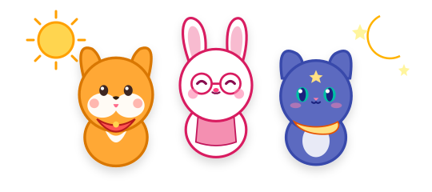
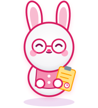

☀️
☁️
⏰
⭐
🌙
《生理時鐘大冒險》
Chronotype Adventure ． 探索晨型與夜型的生活節奏

「太陽升起，有人精神百倍！
月亮出現，有人卻才剛充滿活力！
每個人的生理時鐘都不一樣。
你能幫助三位好朋友，找到適合自己的生活節奏嗎？」
✨ 擔任「生理時鐘管理師」，透過拖曳活動卡片，兼顧睡眠與學習效率！

任務 A：調整 Neko 的睡前臥室環境
（點擊房間物件調整環境，至少需達成 2 項健康調整）
優化進度：
0／6
尚未達標
🐰 Usagi 提醒：
點擊上方房間裡的物品，幫助 Neko 營造適合分泌褪黑激素的放鬆入睡環境吧！
一日作息時間表
（支援滑鼠拖曳或「點擊卡片 ➔ 點擊時間格」放置）
已安排：0／7 項
待安排活動卡片
剩餘 7 張
⚡ 精神狀態評估
😊
良好
0 疲憊
50 普通
100 活力充沛
※ 本精神值為遊戲化作息模擬，非醫學測量結果。

Usagi 的小叮嚀
把活動卡片拖曳到左側時間格中，觀察角色的精神變化與睡眠時數吧！
👑 生理時鐘管理大師！
恭喜你全破三大挑戰 ． 守護生理時鐘王國
「恭喜你成功幫助三位好朋友！
原來每個人的生理時鐘都不太一樣。
有人早上精神好，有人晚上比較有活力。
不論是晨型人還是夜型人，充足睡眠（9～12 小時）與健康作息都很重要！」
Inu 的收穫：
晨型人喜歡早起，但早起的前提是提早就寢，充足睡眠才能維持整天活力。
Neko 的收穫：
夜型人晚上較有精神不是懶惰！面對固定上學時間，睡前減光、少用手機就能漸進調整！
核心理念：
沒有絕對優劣的時間表，學會傾聽自己的生理時鐘，兼顧上學與健康才是最重要的！